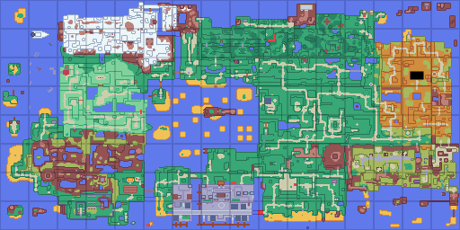
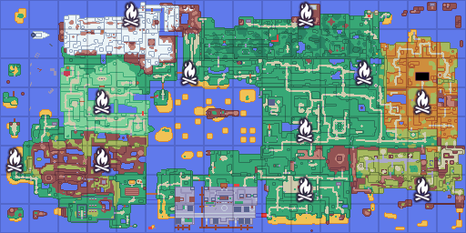
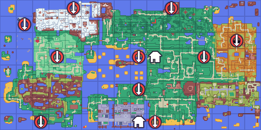
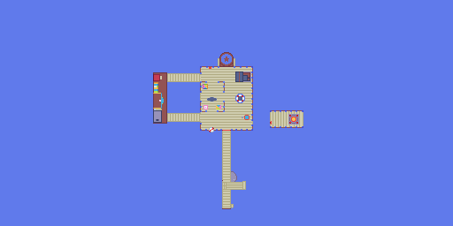
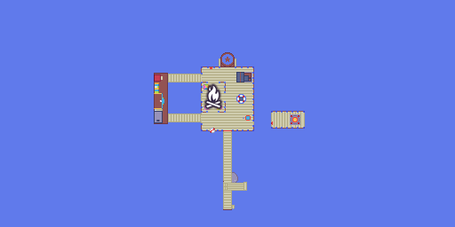
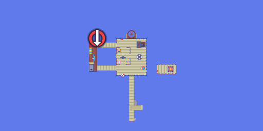

Mapas & Localizações

Mapa completo de Nova Murta com todas as regiões visíveis.

Localização de todos os acampamentos (fogueira) em Nova Murta.

Pontos de viagem rápida e estações Mer-Line disponíveis em Nova Murta.

Mapa completo do Brightside Pier.

Localização do acampamento no Brightside Pier.

Pontos de viagem rápida e estação Mer-Line no Brightside Pier.
Nova Murta
Nova Murta é uma ilha misteriosa onde estranhos de diferentes mundos acabam chegando sem conseguir voltar. A ilha é dividida em várias regiões distintas, cada uma com seu próprio bioma, monstros exclusivos e segredos escondidos. Para explorá-la de ponta a ponta, você precisará desbloquear habilidades de travessia gravando os monstros certos nas fitas certas — sem elas, grandes porções do mapa ficam inacessíveis.
Vilancoradouro
O coração de Nova Murta. É aqui que a maioria dos estranhos começa sua jornada, encontrando os Vigilantes e aprendendo a usar fitas cassete. Contém o Café Gramofone, a Câmara Municipal e o posto dos Vigilantes.
Arredores de Vilancoradouro
A primeira área explorada com Kayleigh. Repleta de monstros básicos como Saltamola e Domiposa. Aqui o jogador aprende a capturar criaturas em fitas e usa pela primeira vez a habilidade de Voo de Asa-Mariposa.
Parque de Nova Murta
Uma grande área de bosques ao norte de Vilancoradouro, com lagos, pontes e plataformas elevadas. É onde Meredith é encontrada pela primeira vez e onde Murilo (Comandante n.1) patrulha numa plataforma alta.
Colina do Outono
Um bioma de outono com folhagens alaranjadas e terreno acidentado. Contém as ruínas da fortaleza dos Corretores e, no topo, a Vila Luz — comunidade cercada do culto de Dorian. É a área da quest de Kayleigh.
Terras Mortas
Um bioma árido e opressivo com esqueletos, areia seca e uma atmosfera de morte. Abriga Vitória Frankenstein como Comandante e é passagem obrigatória para as Ilhas do Sul, onde Judas aguarda.
Ilhas do Sul
Pedaços de terra espalhados na costa sul extrema. Extremamente isoladas, com monstros pesados e o Comandante Judas esperando no fragmento mais remoto. Nível recomendado: 30 ou mais.
Floresta de Eastham
Uma densa floresta ao leste do mapa, subdividida em Bosques de Meandroleste. É aqui que Clee-0, uma robô-garçonete desativada, aguarda ser reativada com a quest Operada por Moeda.
Mar do Pântano
Um vasto pântano ao noroeste, com plataformas flutuantes e planos de água parada. Abriga Bellona e Celestina como Comandantes. A quest de Eugene tem um escritório dos Corretores nesta região.
Os Pântanos
Pântanos sombrios a oeste onde Viola é encontrada pela primeira vez ajudando o jogador contra uma emboscada de Jellytons. Sibila, a Comandante n.11, também habita as encostas desta região.
Prado da Cerejeira
Um prado aberto com cerejeiras floridas ao norte da ilha. Doginho é encontrado no nordeste desta área, tentando escalar penhascos. Barbie (Comandante n.10) fica no lado leste.
Monte Murta
O ponto mais alto de Nova Murta. Codi, o último dos 12 Comandantes, aguarda nas falésias leste. Babelite, o Arcanjo da Ignorância, habita o topo. A Fazenda Piper está nas proximidades, onde a Bola de Cipó de Abóbora é obtida.
Estação da Ponte da Noite
A estação escondida revelada pela música de Morgante — o destino final de toda a jornada em Nova Murta. Encontrada ao resolver as pistas da canção após derrotar 8 Arcanjos. É onde o confronto com Aleph acontece.
O Sistema Ferroviário Subterrâneo
As estações Mer-Line são túneis e trilhos subterrâneos que conectam toda a ilha. Cada estação possui a Plataforma A (viagem rápida entre estações conhecidas) e a Plataforma B (viagens interdimensionais, bloqueadas por 642 anos). Magikaranguejo, o emissário da entidade chamada The Mer-Line, gerencia todas as estações. As estações subterrâneas também funcionam como arenas para os Arcanjos ocultos — cada Arcanjo (exceto Mamon) possui sua própria ala da rede ferroviária.
Estação de Vilancoradouro
A primeira estação descoberta pelo jogador, logo no início do tutorial. É aqui que Morgante é encontrada ferida. Após a quest "Lá Vem o Sol", Ianthe concede acesso especial pela Plataforma A.
Quartel-General dos Corretores
Uma fortaleza de concreto — não uma estação tradicional — construída por Mamon sobre Nova Murta. Destino final da quest de Eugene, onde Mamon (Consumismo) é derrotado e Allegra é encontrada.
Estação de Energia
Descoberta na quest "Lá Vem o Sol" ao atingir Nível 4 no Quadro dos Vigilantes. Contém diários dos cientistas que encontraram Hélia (Fusão) e desencadearam a loucura que destruiu a instalação.
Priorize habilidades de travessia cedo
Voo de Domiposa e Eletromagnetismo são essenciais logo nas primeiras horas. Sem elas, áreas inteiras — incluindo a maioria dos Comandantes — ficam completamente inacessíveis. Capture os monstros certos nas missões iniciais.
Baús de Vigilante escondem itens raros
Espalhados pelo mapa inteiro, os Baús de Vigilante contêm Adesivos de movimento, fitas básicas e itens de remaster. Muitos ficam em áreas aparentemente inacessíveis — procure caminhos alternativos acima e abaixo do terreno visível.
A música de Morgante é gerada proceduralmente
A localização da Estação da Ponte da Noite muda entre saves. Preste atenção nas pistas da letra — ela indica norte/sul, leste/oeste, descrição do terreno e ação a realizar. Derrotar todos os 9 Arcanjos (incluindo o extra) revela o tile exato no mapa.
Revisitação: revanche dos Comandantes
Após conquistar o título de Comandante Vigilante, todos os 12 Comandantes e Ianthe+Wilma aceitam revanche. As batalhas de revanche são consideravelmente mais difíceis — trazem novos monstros e combinações táticas mais elaboradas.
Acampamentos restauram HP e fitas
Espalhados por todas as regiões avançadas, os acampamentos são pontos de descanso gratuitos que restauram HP e reparam a durabilidade das fitas. Em regiões longe de Vilancoradouro, localizar o acampamento antes de explorar pode ser a diferença entre sobreviver ou não.